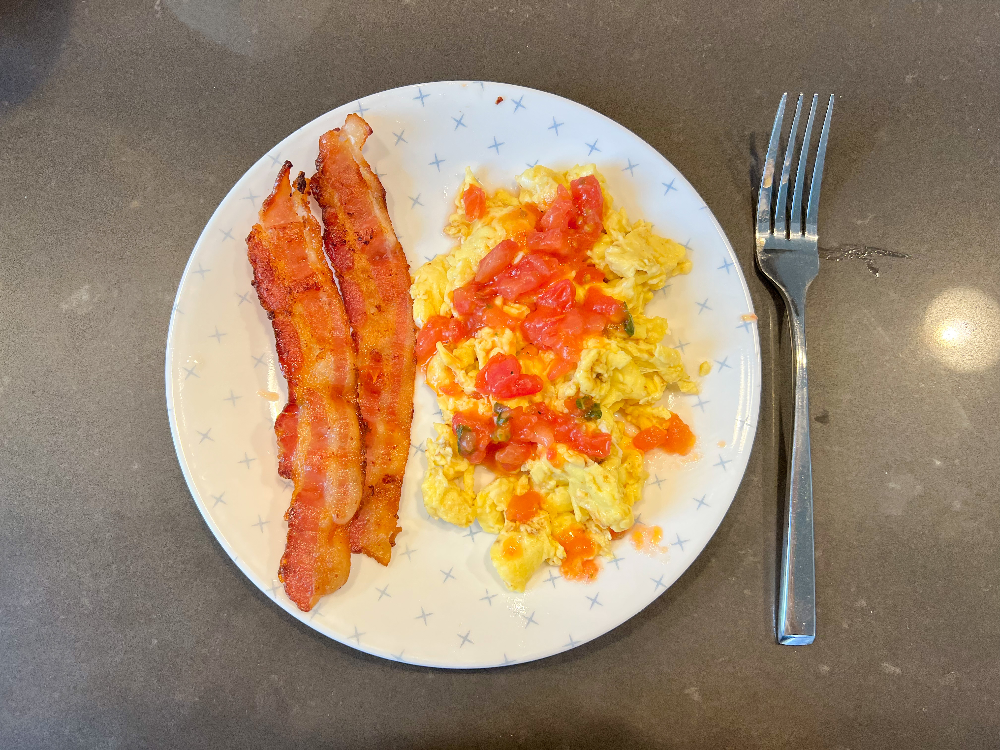
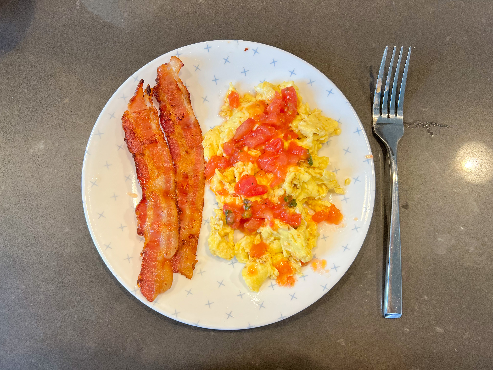
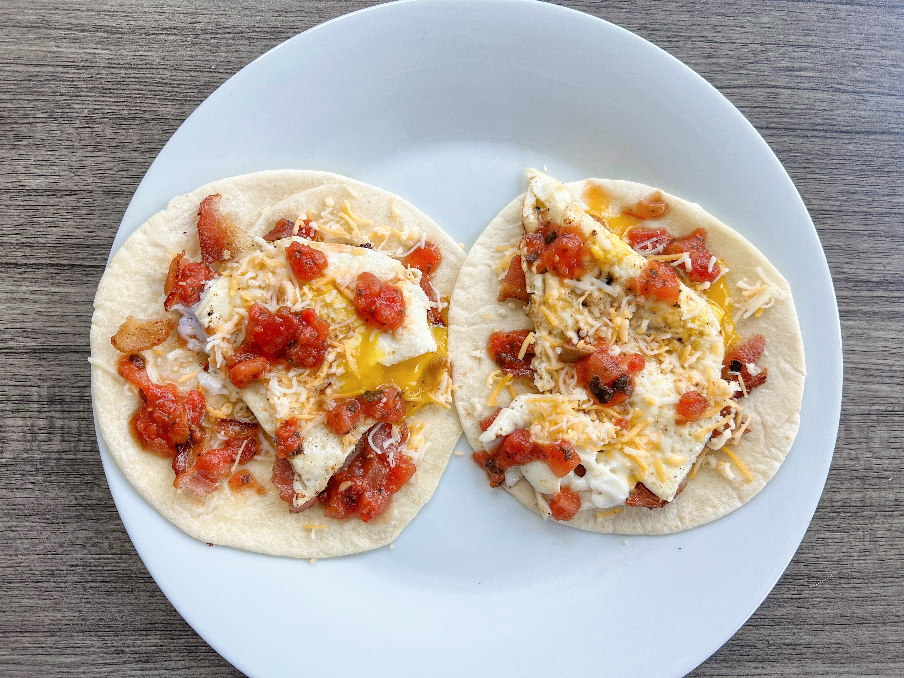
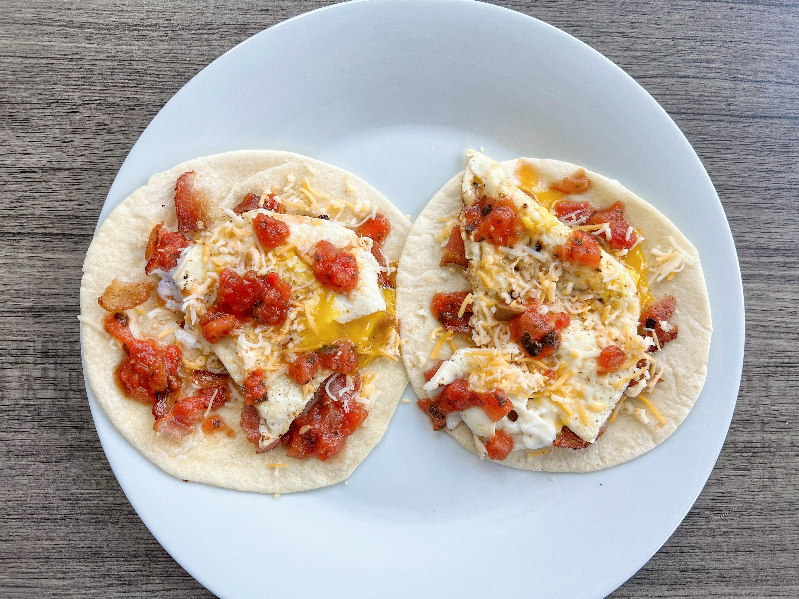
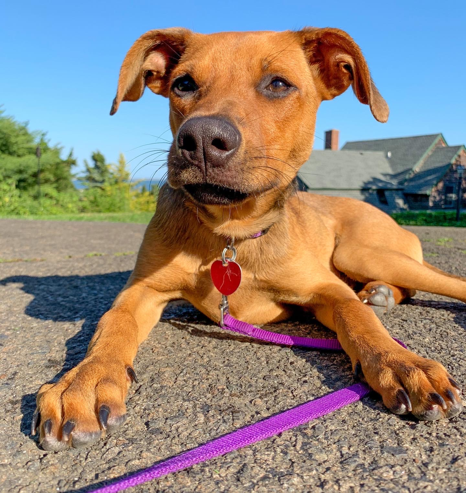
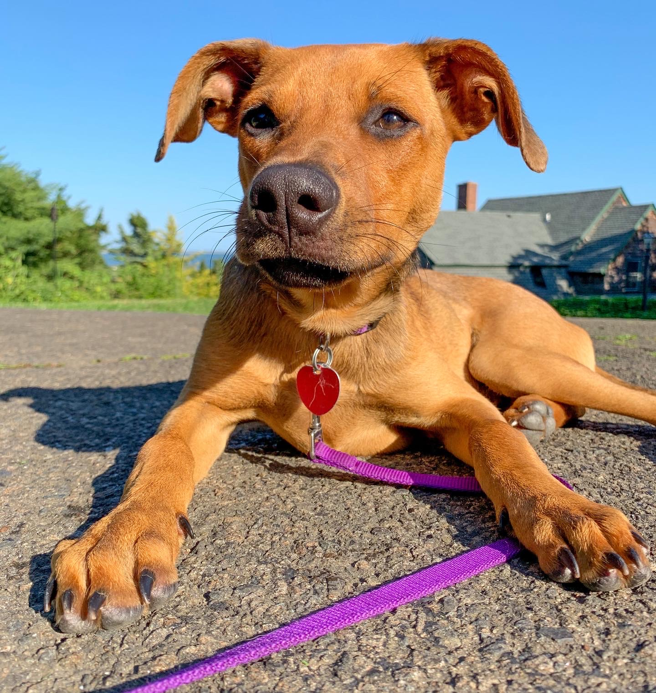

MY INTERESTS
Cooking
Recently, I have begun to enjoy cooking. Take a look at some of my favorite meals that I've made recently!


 


 


My Dogs
I love all dogs, but my favorite two are my own: Queen Charlie and Mr. Murphy.
 
